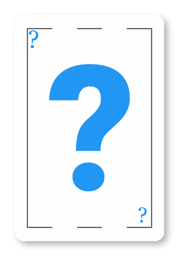

<ngx-spinner type=null template="">
  <p style="color: white">Cargando... </p>
</ngx-spinner>

<ion-header>
    <ion-toolbar color="warning">
        <ion-back-button defaultHref="home-cliente" slot="start"></ion-back-button>
        <ion-title>Juego mayor menor</ion-title>
    </ion-toolbar>

</ion-header>
<ion-content>
    <div class="centrado">
        <div class="row" style="text-align:center">
  
            <ion-row>
                <ion-col > 
                    <strong>Aciertos: {{cuenta}}/2</strong>
                </ion-col>
                <ion-col  >
                  <strong > Vidas restantes </strong><br>
                   
                </ion-col>
                </ion-row>
                
        </div>
 <br><br>
        <div class="row">
            <div class="column ">
                
            </div>
            <div class="column">
                <ion-label>Esta carta es: </ion-label>
                <br>
                <ion-button (click)='play("mayor")' [disabled]="mostrarFin" class="btn-warning">Mayor</ion-button>
                <br>
                <ion-button (click)='play("igual")' [disabled]="mostrarFin" class="btn-warning">Igual</ion-button>
                <br>
                <ion-button (click)='play("menor")' [disabled]="mostrarFin" class="btn-warning">Menor</ion-button>
                <br>
                <ion-label>que la siguiente</ion-label>
                <div class="column ">
                    
                </div>
            </div>
        </div>
    </div>
</ion-content>